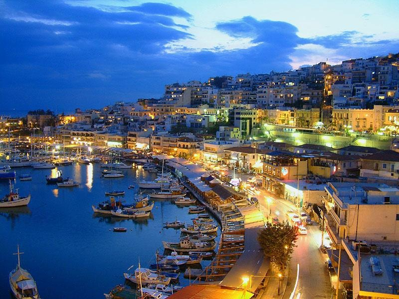
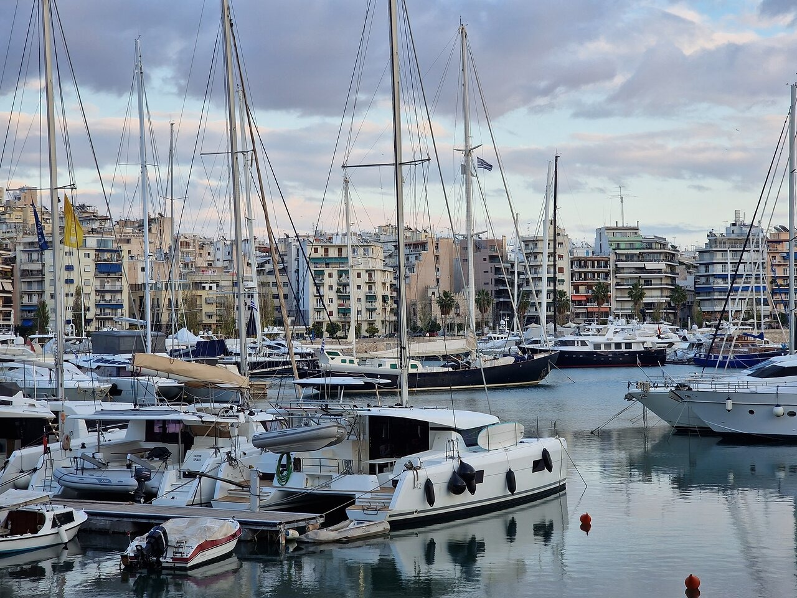
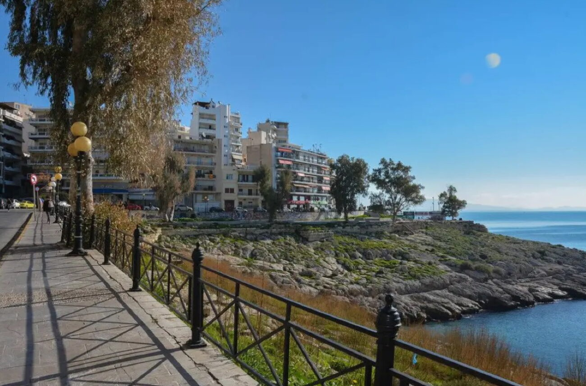

Μικρολίμανο
Το Μικρολίμανο ή Φανάρι ή λιμένας Κουμουνδούρου, πρώην Τουρκολίμανο και στην αρχαιότητα Λιμένας
Μουνιχίας, αποτελεί σήμερα τουριστική τοποθεσία και περιλαμβάνεται στην ευρύτερη συνοικία
της Καστέλλας. Βρίσκεται στα βορειοανατολικά της Πειραϊκής χερσονήσου συνορεύοντας με την συνοικία
του Νέου Φαλήρου. Μόλις μπείτε στην καρδιά του Μικρολίμανου θα σας μαγέψει αυτή η γραφική και άκρως
νησιώτικη εικόνα με τα σπίτια αμφιθεατρικά κτισμένα στο λόφο, ενώ δίπλα σας θα βλέπετε
αγκυροβολημένα κότερα και μικρά καΐκια.Τα δεκάδες μαγαζάκια που λειτουργούν κατά μήκος της παραλίας
ολοκληρώνουν αυτή την εικόνα και αίσθηση νησιού.Tο φαγητό στο Μικρολίμανο φαίνεται πως τα τελευταία
χρόνια έχει ανοίξει τους ορίζοντες του και είναι σε ετοιμότητα για να σας ταξιδέψει first-class στις
κουζίνες του κόσμου, με διαβατήριο τα πιο γευστικά, αμιγώς επηρεασμένα ή απλώς πειραγμένα από τις
διεθνείς κουζίνες, μενού. Απολαμβάνοντας τη θέα και το θαλασσινό αεράκι, είτε επιλέξετε τις
παραδοσιακές γεύσεις είτε πιο fusion πρότασεις,ένα είναι βέβαιο: το σημερινό σας γεύμα θα σας
ανταμείψει!

Μαρίνα Ζέας
Η Μαρίνα Ζέας βρίσκεται στον Πειραιά, στην ανατολική ακτή της χερσονήσου της Πειραϊκής. Η περιοχή της
θάλασσας αποτελείται από δύο λιμάνια, το Πασσαλιμάνι και τη Φρεατίδα. Σε σχέση με άλλες μαρίνες, η
κίνηση εδώ είναι πιο αυξημένη χάρη στα πολλά καταστήματα μέσα στη μαρίνα και τον γύρω χώρο. Η Μαρίνα
Ζέας είναι ένα σημείο στον Πειραιά ιδανικό για περπάτημα, καθώς στην διαδρομή σας απολαμβάνετε την
θέα της θάλασσας, του ουρανού και των κότερων. Ωστόσο, εκτός από ιδανικό μέρος για περπάτημα,είναι
ιδανικό μέρος για φαγητό και ποτό καθώς διαθέτει πολύ ενδιαφέροντα μαγαζιά και διεθνείς κουζίνες για
όλα τα γούστα, όπως Ιταλικό, Μεξικάνικο, Ασιάτικο,Αμερικανικό και άλλα πολλά.

Πειραϊκή
Η Πειραϊκή αποτελεί την Νοτιοδυτική παραλιακή συνοικία του Πειραιά, βρίσκεται ανατολικά του κεντρικού
λιμανιού του Πειραιά. Κατά μήκος της παραλίας της Πειραϊκής βρίσκονται τα αρχαία Μακρά Τείχη (τείχη
του Κόνωνα) και το λιμάνι της. Συνορεύει στα βόρεια με την Καλλίπολη, στα ανατολικά με τον Άγιο
Βασίλειο, στα δυτικά και νότια βρέχεται σε ένα τεράστιο μήκος από τον Σαρωνικό κόλπο δημιουργώντας
την Πειραϊκή ακτή επί της Ακτής Θεμιστοκλέους. Κι αν ο Πειραιάς έχει να σας παρουσιάσει άπειρες
επιλογές σε ψαροταβέρνες, κουτούκια, fancy εστιατόρια και πιο fast-food φιλοσοφίας στέκια, η
Πειραϊκή ειδικεύεται στις “ταβερνοκαταστάσεις”.Κατά μήκος της θα βρείτε
ουζερί,μεζεδοπωλεία,μπακαλοταβέρνες και ψαροταβέρνες, τα οποία έχουν χαραγμένη πάνω τους μια στάμπα
αυθεντικότητας του παλιού Πειραιά, τότε που όλα ήταν λίγο πιο αγνά και πολύ πιο νόστιμα.